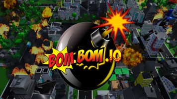
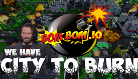

Introduction
BomBom.io is a fast-paced, explosive multiplayer arena game that puts a thrilling spin on the classic bomberman formula. Players drop into a grid-based battlefield where the primary objective is to place bombs strategically to eliminate opponents and be the last one standing. What makes BomBom.io truly unique is its seamless blend of classic tactical bombing with modern .io game accessibility and rapid matchmaking. Players love it because every match is unpredictable; a single misplaced bomb can lead to a chain reaction that wipes out multiple enemies or traps you in your own blast. The game rewards quick reflexes, spatial awareness, and cunning traps, ensuring that every second in the arena is filled with high-stakes tension and explosive action.
Getting Started

To start playing BomBom.io, simply visit the official website and click play to instantly join a multiplayer lobby. You will spawn in a destructible arena filled with breakable blocks and indestructible walls. Your primary controls involve using the WASD or arrow keys to navigate your character across the grid. To place a bomb, press the Spacebar or click the left mouse button, depending on your settings. Once a bomb is planted, it will flash for a few seconds before detonating, creating a cross-shaped blast radius. Your immediate goal in your first few matches is to master movement and bomb timing. Break the soft blocks to clear paths and uncover power-ups, which can increase your bomb capacity, expand your blast radius, or boost your movement speed. Always keep an eye on your surroundings, as the blast from your own bombs can eliminate you if you fail to escape the blast radius in time.
Basic Tips
For beginners looking to survive their first matches in BomBom.io, mastering a few essential mechanics is crucial. First, always clear your escape route before planting a bomb. Never trap yourself against an indestructible wall without a guaranteed path to safety. Second, prioritize breaking soft blocks early in the match to uncover power-ups; increasing your bomb count and blast range gives you a massive advantage over opponents. Third, use the 'bomb kick' mechanic if available, or carefully time your movements to walk over your own bombs just before they detonate, allowing you to set traps without taking self-damage. Fourth, pay attention to chain reactions. If you destroy a block that is next to another player's bomb, it can trigger a massive explosion, so use environmental hazards to your advantage. Finally, avoid camping in corners; while it might feel safe, it leaves you vulnerable to opponents who can easily box you in with their own bombs.
Advanced Strategies

Experienced players in BomBom.io rely on advanced strategies to dominate the arena and outsmart their opponents. One highly effective tactic is the 'pincer trap.' By coordinating with a teammate or using the arena's geometry, you can plant bombs on two opposite sides of a narrow corridor, forcing enemies into a deadly crossfire. Another crucial strategy is power-up denial. If you spot a rare power-up spawning, use long-range blasts to destroy the surrounding blocks quickly, but be prepared to ambush enemies who rush to claim it. Additionally, master the art of the 'fake-out.' Plant a bomb and immediately run away as if you are retreating, only to double back and trap the chasing opponent in the blast radius. Lastly, manage your bomb economy carefully. Do not waste bombs on empty spaces; instead, use them to control chokepoints and restrict enemy movement, forcing them into unfavorable positions where your subsequent attacks are guaranteed to hit.
Pro Tips
To separate yourself from good players and become a true BomBom.io master, you must master micro-movements and psychological manipulation. First, utilize 'pixel walking' to navigate through tight blast radii; understanding the exact hitboxes of explosions allows you to survive seemingly inescapable traps. Second, employ the 'bait and switch' technique by deliberately leaving a power-up uncollected, planting a hidden bomb nearby, and waiting for a greedy opponent to walk into your ambush. Third, memorize the spawn timers of the most valuable power-ups on the map. Controlling the map's economy is just as important as controlling your movement. Finally, use your bombs not just to kill, but to destroy the blocks shielding your enemies, stripping away their cover and forcing them into the open where they are easy targets for your follow-up strikes.
🎮 Controls & Mechanics Deep Dive
Before you start dropping explosives, you need to understand exactly how Bombom.io handles movement and physics. Unlike older, rigid grid-based bomber games, Bombom.io uses a smoothed movement system. You’re still bound by an underlying grid, but the interpolation gives you a bit of momentum. This means your turning radius isn't instant; if you're sprinting right and suddenly need to go left, you'll slide just a fraction of a tile before changing direction. Mastering this slight delay is the difference between surviving a blast and getting caught in the crossfire.
Your primary controls are straightforward: WASD or the Arrow Keys to move, and the Spacebar (or left mouse click) to drop a bomb. But the magic lies in the collision mechanics. Your character's hitbox is slightly smaller than a full grid tile, which allows for some incredibly tight squeezes between exploding bombs if your timing is perfect. However, don't get cocky—bomb blast radii are strict. If your hitbox overlaps the explosion animation by even a single pixel, you're out.
Scoring in Bombom.io isn't just about racking up kills. While eliminations give you the biggest chunk of points, the game heavily rewards survival time and strategic map control. Staying alive until the final seconds grants a massive score multiplier. Additionally, the power-up system directly alters your mechanics. Grabbing a flame icon increases your blast radius, a bomb icon lets you place more explosives simultaneously, and the speed icon actually reduces your turning radius, making you feel much more agile. Understanding how these stats stack and change your physical footprint on the map is crucial for high-level play.
🎯 Game Modes Breakdown
Bombom.io offers a few distinct ways to play, and each mode completely changes the way you should approach the match. Knowing the rules of the lobby you just dropped into is half the battle.
- Free-For-All (FFA): This is the classic, chaotic 4-to-8 player mode. The objective is simple: be the last bomber standing. Because everyone is out for themselves, the early game is all about safe farming. Clear out blocks, grab power-ups, and avoid unnecessary fights. Save your aggression for the mid-to-late game when the board is smaller and players are forced into close quarters.
- Team Deathmatch: Usually played in 2v2 or 3v3 lobbies, this mode shifts the focus from individual survival to coordinated aggression. You and your teammates share a win condition. The strategy here changes drastically—you can use "cross-bombing," where you and a teammate drop bombs on intersecting tiles to create inescapable kill zones. Communication (or at least predictable movement) is key here.
- Battle Royale: This mode adds a shrinking play area. A toxic boundary slowly closes in, forcing players toward the center of the map. The strategy is highly defensive early on. You want to stay near the safe zone's edge, grab quick power-ups, and let the panicked players fight each other as the circle shrinks. In the final circles, it becomes a pure test of bomb-chaining and trap-setting.
- Time Attack / Survival: A PvE-focused mode where you face endless waves of AI blockers or environmental hazards. The goal is to clear the board as fast as possible or survive for a set duration. This mode is fantastic for practicing your bomb placement efficiency and map-clearing routes without the pressure of human opponents.
🚀 Advanced Strategies & Pro Tips
If you've mastered the basics and want to climb the leaderboards, you need to start playing the mind game. Here are some advanced techniques that separate the casuals from the true Bombom.io veterans.
- Bomb Pumping: This is the most important advanced mechanic in the game. If you drop a bomb and stand right next to it, the explosion will push your character one tile in the direction you're facing. You can use this to "pump" yourself across the map at lightning speed, bypassing enemies and grabbing power-ups before they even react. Just make sure you have the movement speed to outrun your own blast!
- The "Fake-Out" Trap: Human players are predictable. When you drop a bomb, their instinct is to run away from it. Drop a bomb, walk directly toward your opponent to block their primary escape route, and then immediately double back the way you came. They will dodge into the exact tile you just vacated, right into your secondary bomb trap.
- Map Counting and Blast Math: Stop guessing your blast radius. If you have 3 flame power-ups, your bomb clears exactly 3 tiles in each cardinal direction. Learn to visually count the tiles before you drop. If you see an enemy hiding behind a block exactly 3 tiles away, you know your bomb will instantly vaporize them. If they are 4 tiles away, you need to close the gap first.
- Cornering and "Pinning": Never chase an enemy into an open space. Instead, use your bombs to systematically destroy the blocks around them, shrinking their available movement area. Once they are pinned against a wall or an indestructible block, they have nowhere to dodge. Drop your final bomb and walk away.
- Psychological Aggro: If you have a massive blast radius and an opponent has none, use that intimidation. Drop a bomb just outside their vision to force them to move. Panic makes players make mistakes, like running into a dead end or trapping themselves against a wall. Force them to make the mistake for you.
❓ Frequently Asked Questions
How do I get better at Bombom.io?
The fastest way to improve is to stop focusing on getting kills and start focusing on map awareness. Pay attention to where the indestructible blocks are, memorize your blast radius, and practice bomb pumping to improve your mobility. Watch how high-ranking players move—they rarely run in straight lines and always have an escape route planned before they even drop a bomb.
Is Bombom.io completely free to play?
Yes, Bombom.io is 100% free to play directly in your web browser. There are no pay-to-win mechanics or hidden subscriptions. The game does feature optional cosmetic skins and custom bomb trails that you can unlock or purchase, but these have absolutely zero impact on gameplay, hitboxes, or stats.
Can I play Bombom.io on my phone or tablet?
Because it's a browser-based .io game, you can technically load it up on mobile devices. However, it's highly recommended to play on a PC or laptop. The game requires precise, split-second grid movements and rapid bomb placement. Virtual joysticks and touch buttons just don't offer the tactile feedback and speed needed to compete in higher-tier lobbies.
How do I play with my friends?
Setting up a private match is super easy. When you're in the main lobby, look for the "Create Private Room" or "Play with Friends" button. This will generate a unique lobby code or link. Just share that link with your squad, and once everyone has joined, the host can start the match. It's a great way to practice team strategies before jumping into ranked public lobbies.
What power-up should I prioritize picking up first?
Always prioritize the Flame (blast radius) power-up first. Having a larger explosion radius allows you to clear blocks faster, hit enemies from further away, and control more of the map. Once your flame is maxed out or you have a comfortable 2-3 tile radius, switch to grabbing the Bomb power-up so you can lay down multiple traps. Save the Speed power-up for last, as moving too fast without the blast radius to back it up just makes you run into your own explosions.
Conclusion
BomBom.io offers a perfectly balanced mix of strategy, speed, and explosive chaos that keeps players coming back for more. Whether you are carefully planning a multi-bomb trap or frantically dodging a chain reaction, every match delivers intense, unpredictable fun. Jump into the arena, refine your bombing skills, and see if you have what it takes to be the last player standing.